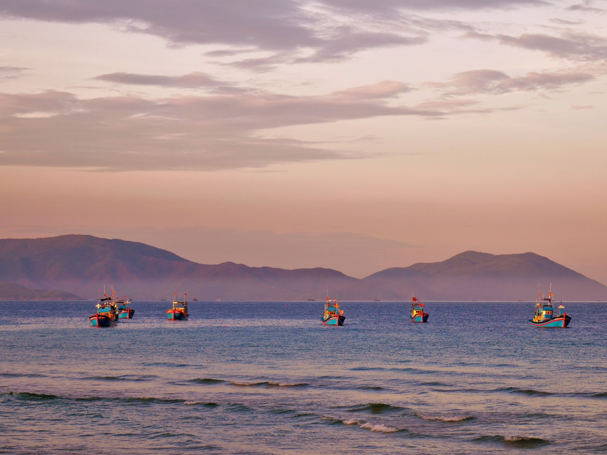
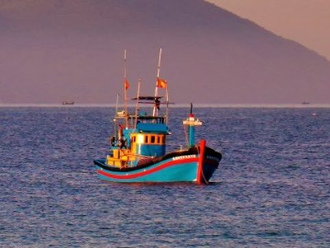
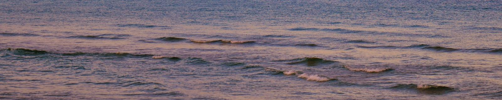

Biển miền Trung
Chiều tà theo tàu ra khơi, đêm câu mực dưới đèn
Tàu rời bờ lúc mặt trời xuống. Bật đèn khoảng 19 giờ, mực vào đèn rộ nhất sau khi trăng lặn. Mang áo khoác, đêm biển lạnh hơn bạn nghĩ.
@hoangphao12 phút đọc
Nhà chung của anh em cần thủ Việt. Tra điểm câu theo mùa, học mồi từ người đã câu thật, mua bán và đổi đồ câu với người đã xác minh.
Sắp vào mùa khô ở Phú Quốc (T11–T4, biển lặng). Cù Lao Chàm đang mùa biển động, nên tránh ra đảo câu.
Xem lịch mùa →Lịch khởi tạo chỉ gồm thông tin đã có nguồn. Ô trống là chỗ chờ anh em đã đi thực tế bổ sung.
| Điểm câu |
|---|
Nguồn: Phú Quốc – VinWonders; Nha Trang – Fishing World Guide (chưa đối chiếu nguồn trong nước); Cù Lao Chàm – Báo Pháp luật. Vùng nước Hòn Mun (Nha Trang) là phân khu bảo vệ nghiêm ngặt, không khai thác.

Tàu rời bờ lúc mặt trời xuống. Bật đèn khoảng 19 giờ, mực vào đèn rộ nhất sau khi trăng lặn. Mang áo khoác, đêm biển lạnh hơn bạn nghĩ.


Mỗi loài có trang riêng: mùa, điểm câu, mồi, kỹ thuật và các hành trình liên quan.
Tình trạng chấm theo chuẩn A · B · C. Người bán có điểm tin cậy từ đánh giá hai chiều.
Email, số điện thoại, giấy tờ tùy thân cho người bán nhiều. Huy hiệu hiện ngay trên tin.
Bắt buộc ảnh serial, khoen cần, tay quay. A: như mới · B: có vết dùng, chạy tốt · C: có lỗi đã ghi rõ.
Không đăng máy kích điện, chất nổ, hóa chất, ngư cụ tận diệt, hàng giả. Vi phạm bị khóa tài khoản.
Có hôm về tay trắng, có hôm dính con để đời. Homies giữ lại cả hai, để chuyến sau của ai đó đi đúng mùa, đúng chỗ.